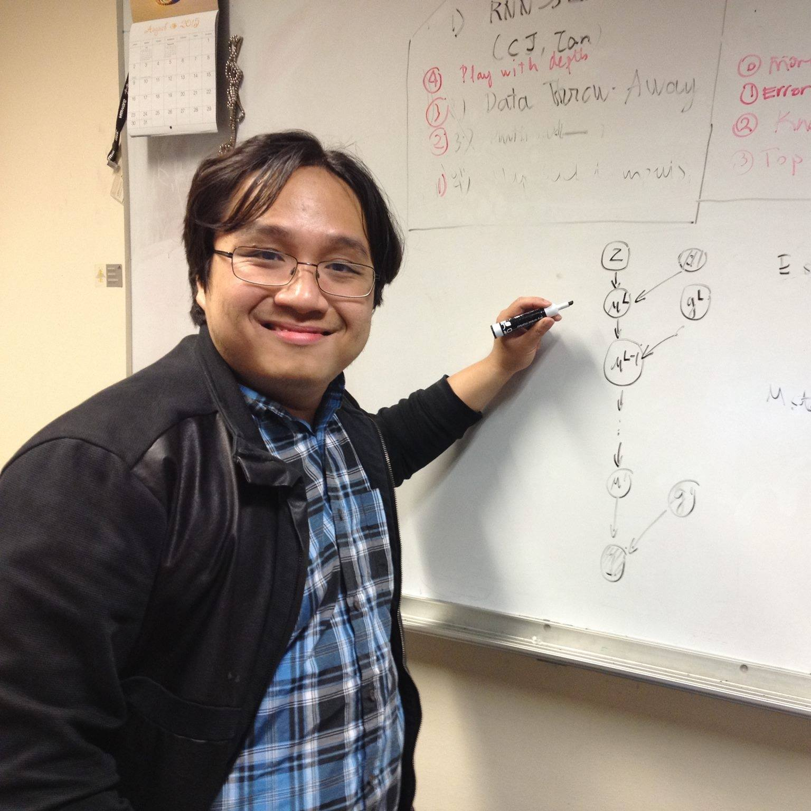

Tan Minh Nguyen
|
 |
Assistant Professor (Presidential Young Professor)
Department of Mathematics
National University of Singapore
Email: tanmn@nus.edu.sg
Office: 10 Lower Kent Ridge Road, S17-08-20, Singapore 119076
Education
Ph.D. in Electrical and Computer Engineering, Rice University, 2020
M.S. in Electrical and Computer Engineering, Rice University, 2016
B.S. in Electrical and Computer Engineering, Rice University, 2014
CV, Github, Google Scholar
|
Brief Biography
I am currently an Assistant Professor of Mathematics (Presidential Young Professor) at the National University of Singapore (NUS). Before joining NUS, I was a postdoctoral scholar in the Department of Mathematics at the University of California, Los Angeles, working with Dr. Stanley J. Osher. I obtained my Ph.D. in Machine Learning from Rice University, where I was advised by Dr. Richard G. Baraniuk. I gave an invited talk in the Deep Learning Theory Workshop at NeurIPS 2018 and organized the 1st Workshop on Integration of Deep Neural Models and Differential Equations at ICLR 2020. I also had two awesome long internships with Amazon AI and NVIDIA Research, during which I worked with Dr. Anima Anandkumar. I am the recipient of the prestigious Computing Innovation Postdoctoral Fellowship (CIFellows) from the Computing Research Association (CRA), the NSF Graduate Research Fellowship, and the IGERT Neuroengineering Traineeship. I received my M.S. and B.S. in Electrical and Computer Engineering from Rice in May 2018 and May 2014, respectively.
I am also writing about simple ideas and principled approaches that lead to working machine learning algorithms on my blog, Almost Convergent.
Research Interests
My research develops mathematical foundations for reliable, interpretable, scalable, and controllable AI. I use tools from optimization, geometry, dynamical systems, optimal transport, statistics, and algebra to study how foundation models represent information, how representations evolve through attention, state-space, and mixture-of-experts architectures, and how symmetries and conservation laws determine meaningful model behavior.
My current focus is programmable control of foundation models through activation steering, feedback control, distributional and kernelized steering, and compositional control, with applications to trustworthy AI, AI for mathematical research and education, AI for science, and foundation-model adaptation.
Publications
Journal Publications
Dual Dynamic Inference: Enabling More Efficient, Adaptive, and Controllable Deep Inference. IEEE Journal of Selected Topics in Signal Processing, 2020.
Yue Wang, Jianghao Shen, Ting-Kuei Hu, Pengfei Xu, Tan M. Nguyen, Richard G. Baraniuk, Zhangyang Wang, Yingyan Lin.
Conference Publications
Tree-sliced Sobolev IPM
. International Conference on Learning Representation (ICLR), 2026.
Viet-Hoang Tran**, Thanh Q. Tran*, Thanh Chu, Duy-Tung Pham, Trung-Khang Tran, Tam Le*, Tan M. Nguyen*.
Quasi-Equivariant Metanetworks
. International Conference on Learning Representation (ICLR), 2026.
Viet-Hoang Tran**, An Nguyen*, Benoit Guerand, , Thieu Vo, Tan M. Nguyen*.
Equivariant Polynomial Functional Networks. International Conference on Machine Learning (ICML), 2025.
Thieu N. Vo*, Hoang V. Tran*, Tho H. Tran*, An T. Nguyen, Thanh Tran, Minh-Khoi Nguyen-Nhat,
Duy-Tung Pham, Tan M. Nguyen.
CAMEx: Curvature-aware Merging of Experts. International Conference on Learning Representations (ICLR), 2025.
Viet Dung Nguyen, Minh Nguyen Hoang, Rachel S.Y. Teo, Luc Nguyen, Tan M. Nguyen**, Linh Duy Tran**.
Elliptical Attention. Conference on Neural Information Processing Systems (NeurIPS), 2024.
Stefan K. Nielsen*, Laziz U. Abdullaev*, Rachel S.Y. Teo, Tan M. Nguyen.
A Probabilistic Framework for Pruning Transformers via a Finite Admixture of Keys. International Conference on Acoustics, Speech, and Signal
Processing (ICASSP, notable-top-3%), 2023.
Tan M. Nguyen*, Tam Nguyen*, Long Bui, Hai Do, Dung Le, Hung Tran-The, Khuong Nguyen, Richard G. Baraniuk, Nhat Ho, Stanley J. Osher.
Probabilistic Framework for Pruning Transformers via a Finite Admixture of Keys. International Conference on Acoustics, Speech, and Signal Processing (ICASSP), 2023.
Tan M. Nguyen*, Tam Nguyen*, Long Bui*, Hai Do, Dung Le, Hung Tran-The, Khuong Nguyen, Richard G. Baraniuk, Nhat Ho**, Stanley J. Osher**.
Papers on Application
Turbulence Forecasting via Neural ODE. NeurIPS Workshop on Machine Learning and the Physical Sciences, 2019.
Gavin D. Portwood, Peetak P. Mitra, Mateus Dias Ribeiro, Tan M. Nguyen, Balasubramanya T. Nadiga, Juan A. Saenz, Michael Chertkov, Animesh Garg, Anima Anandkumar, Andreas Dengel, Richard G. Baraniuk, David P. Schmidt.
|